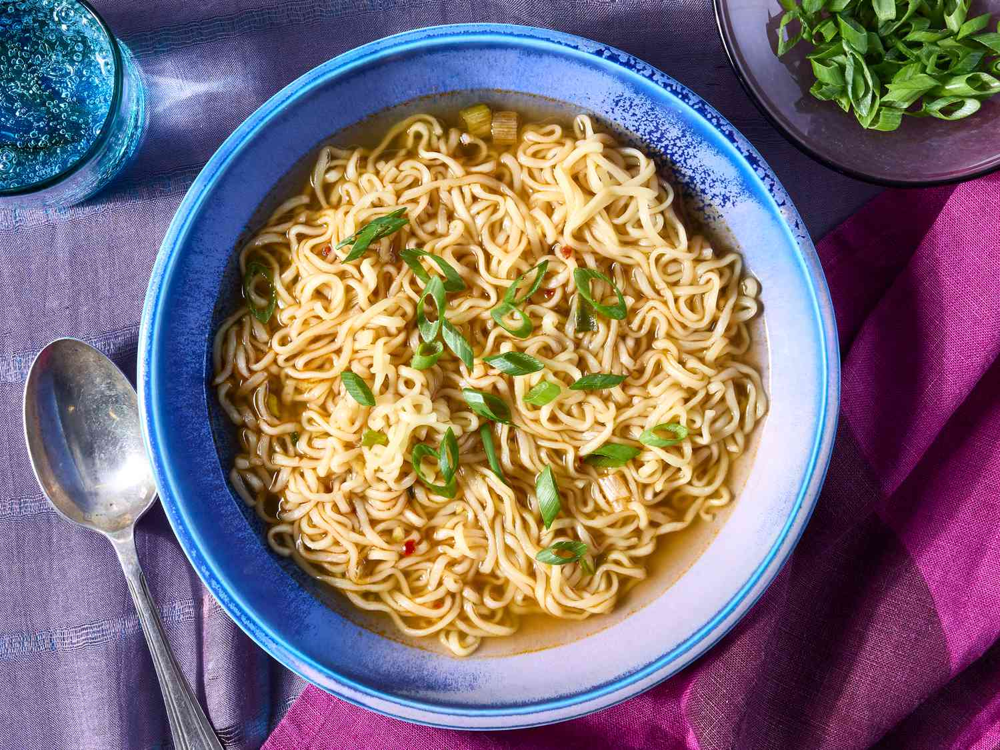

Home
How To Make Ramen
How To Make Ramen

This will teach you how to make Ramen
This savory Ramen soup is easy to make,
ready in a flash, and very, very good! I like to add ginger, soy sauce,
sesame and chili oil for a delicious flavor.
Ingredients Needed
- 3 ½ cups vegetable broth
- 1 (3.5 ounce) package ramen noodles with dried vegetables
- 2 teaspoons soy sauce
- ½ teaspoon chili oil
- ½ teaspoon minced fresh ginger root
- 1 teaspoon sesame oil
- 2 green onions, sliced
Directions
- Gather the ingredients.
-
Combine broth and noodles in a medium saucepan; cover and bring to a
boil over high heat, stirring to break up noodles.
-
Reduce heat to medium and add soy sauce, chili oil, and ginger. Simmer,
uncovered, for 10 minutes.
- Stir in sesame oil.
- Garnish with green onions and serve.
